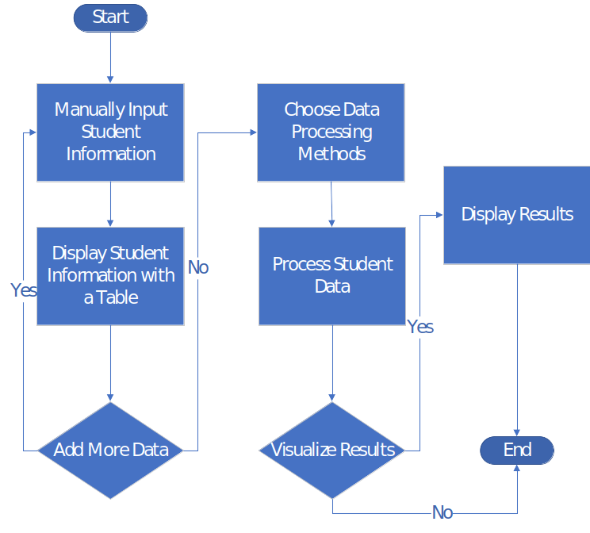

Mvc and javascript
Flowchart
- Let’s use a flowchart to clarify HW4 part 1.
- A flowchart is a type of diagram that represents an algorithm, workflow or process.
- Five basic flowchart elements:
- Terminal Box - Start / End
- Input / Output
- Process / Instruction
- Decision
- Connector / Arrow
- A flowchart can represent an algorithm.
- A flowchart is pictorial representation of an algorithm.
- An algorithm can be expressed and analyzed through a flowchart.
- The high-level algorithm of HW4 can be expressed as the next page flowchart.

Flowchart example based on: https://www.quora.com/What-is-the-difference-between-a-flowchart-and-an-algorithm-1/answer/Jane-Jacobs-7

BootStrap Select List
- Example 25
- Select List: as known as drop-down list.
-
<select>
tag
-
<select>
- The value “-1” will deselect all options (if any).
- HTML tag <label>: defines a label. Similar to Caption. Usually bind with clickable elements. We will learn more about this tag when we introduce <form>
Group Activity 6: 5 minutes
- Work on Example 25:
- Complete the “hole” to display current selected option
- Hint:
- selectObject.selectedIndex => Return the selectedIndex property (starting from 0)
- selectObject.selectedIndex = number => Set the selectedIndex property
- selectObject.options => Return the option (contents)

BootStrap Input Form
- Bootstrap supports the following form controls:
- input
- textarea
- checkbox
- radio
- Select (example 25)
- HTML tag <form> is used to create an HTML form for user input.
-
form-group
class is the easiest way to add some structure to forms. It provides a flexible class that encourages proper grouping of labels, controls, optional help text, and form validation messaging.
- We will learn how to build a JSON object based on input data when we learn jQuery.
- Example 26
Group Activity 7: 7 minutes
- Work on Example 26:
- Complete the “hole” to display inputs
- Hint:
- document.getElementById(‘ID’).value to get the content of an <input>
- document.getElementById(“ID”).checked to get which radio button or checkbox is checked.

How to Insert Rows in a Table
- Example 27
- table.rows.length shows the total length of your table
- You table row and cell are starting from 0
Homework 4
- Implement “View”, “Model”, and “Control” parts of the “vampire app”
- “View”
- Visualization results in a pie chart
- Need to update visualization results if “Model” logic is changed
- “Model”
- Threshold based:
- No shadow +4, otherwise 0
- Complexion pale +3, otherwise 0
- No Garlic +3, otherwise 0
- Total score > 6, yes; <=6 no
- Random guess: randomly decide if a student is a vampire.
- (Optional) Learn more about how to build a decision tree to solve this problem if you want: https://www.youtube.com/watch?v=SXBG3RGr_Rc
- Threshold based:
- “Control”
- a user should be able to choose different data processing methods (“Model” logic) with a list select box. Sample code introduced in Example 25.
- A user should be able to upload and display a classmate information with a table. Example 26.
- The table should be updated if a piece of new classmate information is input. Example 27.
- Existing student data: Example 24 (classmate_data).
- A flowchart about your vampire app, try Microsoft Visio => onthehub free
- Submit using Github, add Rui (ruiwu1990) and TA as collaborator, one github manager from your team. Due March 16
| Index | Prev | Next |